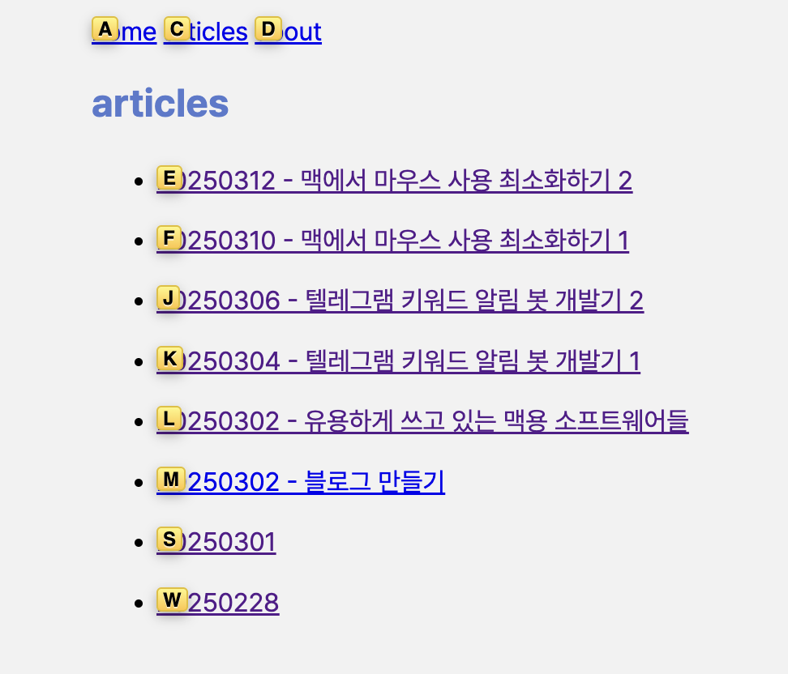
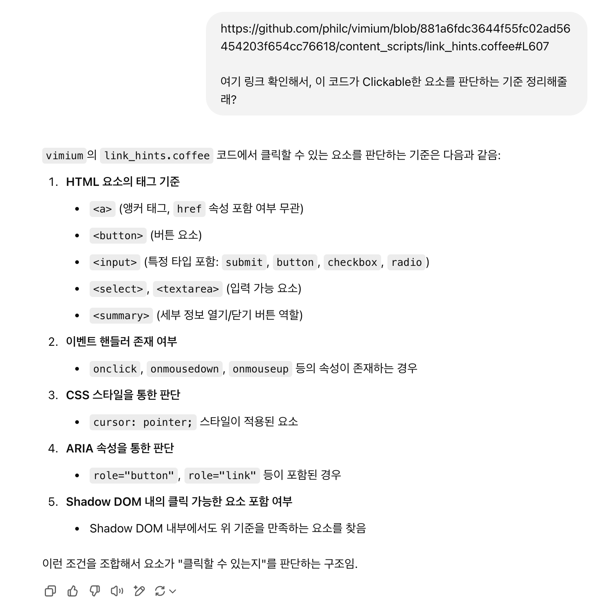
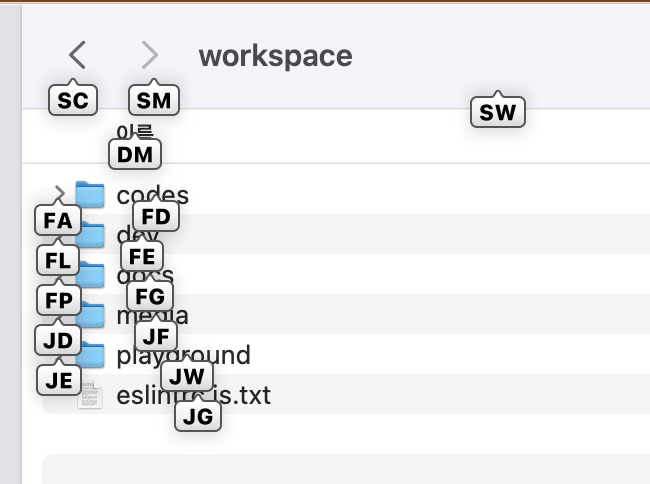
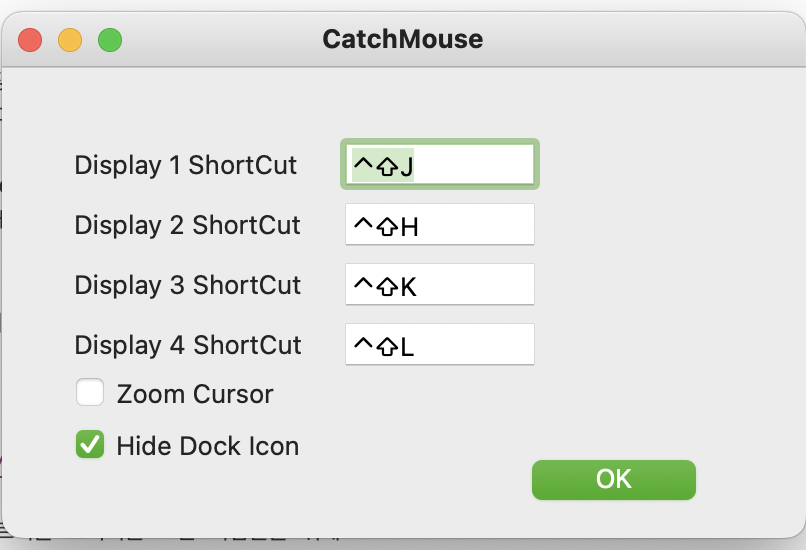

Visual Studio Code에서는 내가 원하는 방식대로 키맵핑을 바꾸면서 거의 대부분의 상황에 마우스 커서를 움직이지 않게 되었다.
하지만 VSCode를 끄고 나면 거의 대부분의 상황에서 다시 마우스를 움직여야 했다.
새로운 솔루션들이 더 필요했다.
20250302 - 유용하게 쓰고 있는 맥용 소프트웨어들
위 포스트에서 먼저 소개했던 툴들인데 내 마우스 안 쓰기에 가장 영향을 많이 준 두 가지이다.
https://chromewebstore.google.com/detail/vimium/dbepggeogbaibhgnhhndojpepiihcmeb?hl=ko
Vimium은 웹 브라우저 확장 프로그램으로, Chromium 기반 브라우저에서 사용이 가능하다.

웹 페이지에서 F키를 누르면 클릭 가능한 요소에 알파벳을 붙인 라벨이 표시되는데,
클릭하려는 요소에 붙은 라벨에 있는 알파벳을 누르면 클릭이 된다.
HJKL키를 이용한 화면 스크롤도 지원하기 때문에, 마우스 스크롤을 이용할 필요도 없다.
Vimium의 소스 코드를 확인해 보면 다양한 기준을 가지고 버튼으로 동작하는 요소들을 찾는데.
어떤 홈페이지는 분명 버튼인데도 Vimium이 감지하지 못하는 경우가 있다.
웹 접근성의 중요성에 대해 실감하는 순간이였다.

이외에도 class 이름 조건들도 있긴 한데, 어쨌든 그냥 아무것도 없이 div태그로만 만들면 Vimium이 인식하지 못 한다.
Homerow는 MacOS 전반에서 Vimium처럼 클릭 가능한 요소를 찾고, HJKL 키를 이용한 스크롤을 지원하는 툴이다.
Vimium에 한참 익숙해진 내가 웹 브라우저 바깥의 환경에서도 비슷한 기능을 쓰고 싶어서 웹 검색을 하다가 찾게 되었다.

이렇게 Finder에서도 사용이 가능하다.
마찬가지로 특정한 기준을 가지고 요소들을 탐색하는데, 소스 코드가 공개되어있지 않아서 정확힌 모르겠다.
하지만 브라우저 내에서도 동작하고, Vimium보다 기준치가 낮기(?) 때문에 Vimium으로 클릭할 수 없는 요소에 동작하기도 한다.
기본적으로 무료이고, 단축키 활성화를 50번 할 때마다 화면 하단에 작은 광고 프롬프트가 뜨는데 바로 ESC로 닫을 수 있어서 불편하진 않다.
"맥 한영키"로 구글에 검색하면 등장하는 필수 프로그램으로 여겨지는 카라비너.
나는 한영키를 바꾸는 것과 동시에 다양한 키를 바꾸어 사용한다.
Vimium 방향키에서 영감을 받아 Control, Command, Option 키 등의 조합과 HJKL 키를 이용해
미션 컨트롤에서 전환할 수 있는 "데스크탑"을 이동하는 단축키를 등록했다.
그리고 Function열의 단축키로 쓸 수 있는
볼륨 업/다운, 미디어 이전/다음/재생 등도 다른 키로 키맵핑하여 미니 배열 키보드에서의 미디어 제어도 편리하게 한다.
https://github.com/round/CatchMouse
디스플레이를 여러 개 연결해 듀얼-트리플 모니터를 쓰는 사람들을 위해
마우스 커서를 빠르게 각 디스플레이로 이동할 수 있게 하는 도구,
Homerow를 통해 전반적인 화면 요소들을 다 제어할 순 있지만, 이건 현재 활성화된 디스플레이 안에서만 동작하기 때문에
디스플레이 간 포커스를 이동하기 위해서 이 프로그램이 쏠쏠하다.
카라비너를 이용해서 마우스 클릭을 동작시키는 단축키 하나 만들어두고
CatchMouse로 커서 이동 -> 클릭 단축키 입력 이면 다른 디스플레이로 포커스를 바로 이동시킬 수 있다. '

다니던 회사에서 이런 세팅들을 하나씩 동료들한테 알려주면서 권유해본 적이 있었는데 제대로 팔린 적은 없긴 했다.
그만큼 굉장히 매니악한 세팅이긴 한데.. 나같은 누군가에겐 유용한 정보 공유일 수도 있지 않을까?